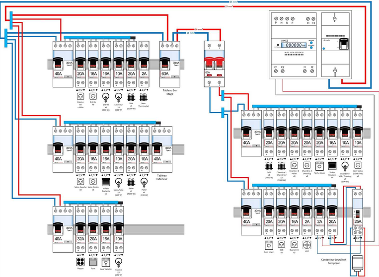
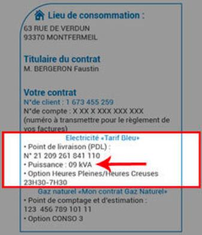
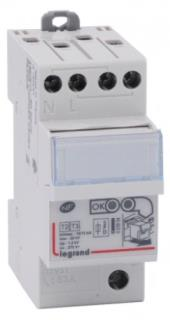
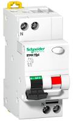
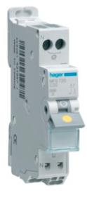
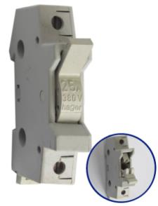
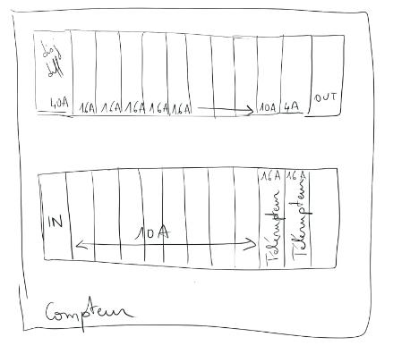

06 Séquence A · Activité 06
Étude électrique
Analyser l’organisation de l’installation électrique de votre logement au regard de la norme NF C 15-100.
Analyser l’organisation de l’installation électrique de votre logement au regard de la norme NF C 15-100.

O3 - Analyser l’organisation fonctionnelle et structurelle d’un produit.
CO3.1. Identifier et caractériser les fonctions et les constituants d’un produit ainsi que ses entrées/sorties
Utilisation des fiches-outil du dossier « Fiche outils habitation » :
Relever votre abonnement :
Vous trouverez ces informations sur la facture d’électricité, quel que soit votre fournisseur.

Relever votre consommation :
Sur votre compteur ou sur vos factures, relever votre consommation sur la dernière année.
Faire un croquis de votre tableau électrique et faire une légende (sur feuille)





Placez ci-dessous une photo de votre tableau électrique ainsi que de votre croquis :
Les circuits électriques sont-ils protégés par un ou des disjoncteurs différentiels 30 mA ? Quelle est leur utilité ?
Pour chaque pièce de votre plan vous devez compléter les tableaux suivants (modifiez l’exemple et rajoutez des lignes pour les autres pièces).
| Pièce | Nombre de prises électriques | Avec ou sans terre | Nombre de prise RJ45 et TV | Recommandation normes | Validation par rapport à la norme NFC 15-100 de 2020 |
|---|---|---|---|---|---|
| Exemple : Chambre | 4 | Avec | 1 TV 0 RJ45 | 3 prises 1 RJ45 1 TV dans au moins une chambre | Manque 1 RJ45 |
| — | — | — | — | — | — |
| Pièce | Nombre de point d’éclairage (lampe) | Nb de points de cde par éclairage | Type de montage | Recommandation normes | Validation par rapport à la norme NFC 15-100 de 2020 |
|---|---|---|---|---|---|
| Exemple : Chambre | 2 | 1 point avec 1 cde 1 point avec 2 cdes | 1 simple allumage 1 va-et-vient | 1 point d’alimentation d’éclairage | Manque 1 RJ45 |
| — | — | — | — | — | — |
Analyser la consommation électrique de votre habitation, avez-vous le bon abonnement ?
Comparer votre installation électrique à celle préconisée par la norme, votre habitation est-elle conforme à la norme ?
Conclure sur l’équipement électrique de votre habitation (est-il suffisant ou non ?)
Ce site a été réalisé par Abdellah CHELOUAH.